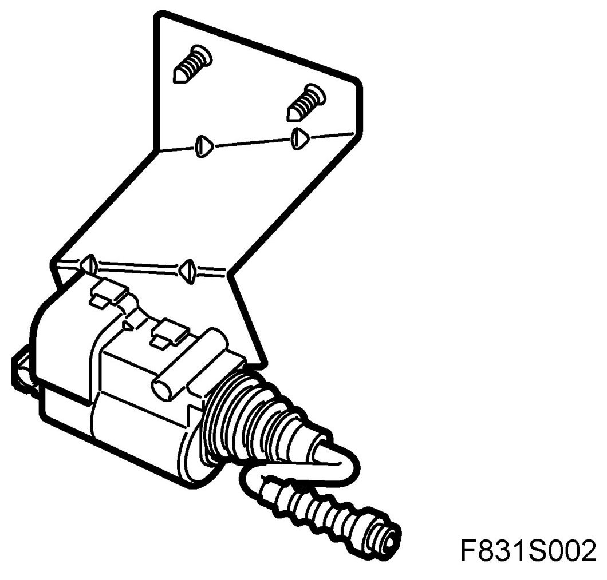
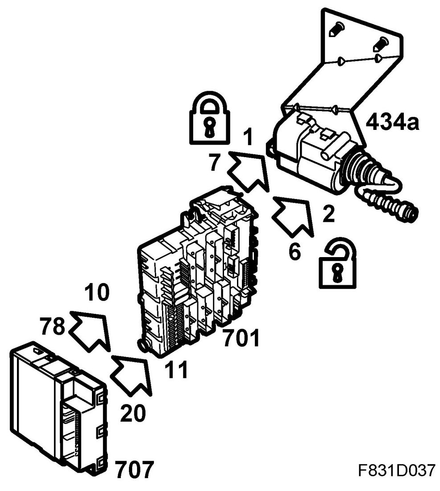
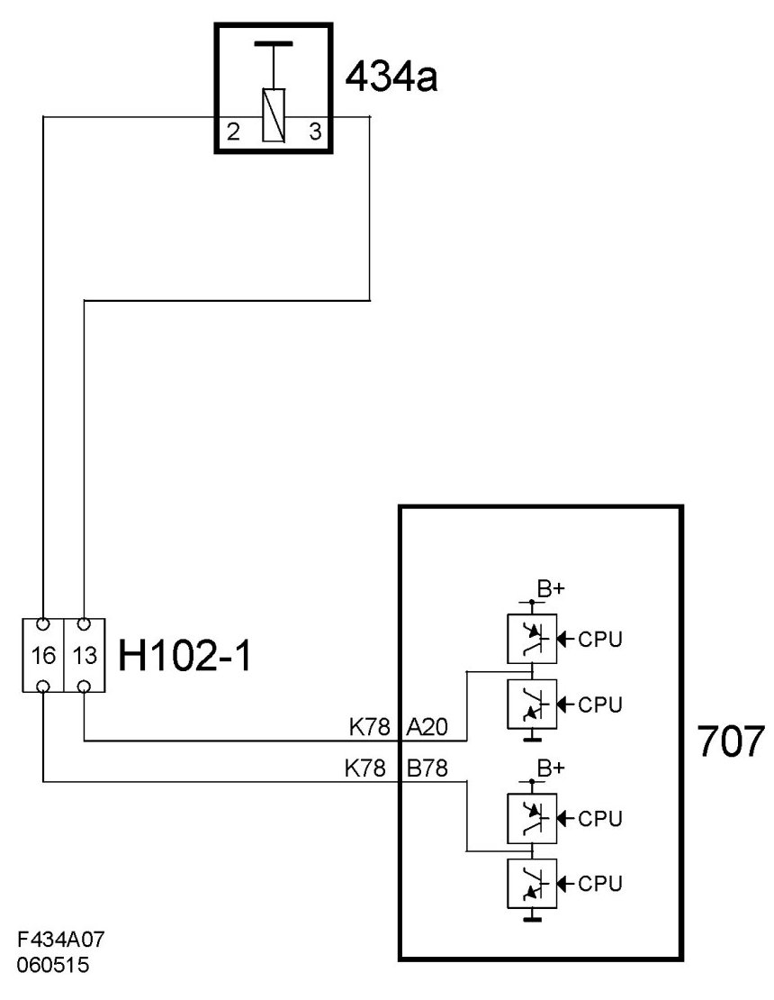

Door Sensor/Switch (For Alarm): Locations
Filler Flap Solenoid, Central Locking System (434a)
Location
Filler flap solenoid, central locking system (434a)
Main task
Used to unlock the fuel filler flap.
Type
The solenoid contains a coil and a moving anchor that has a plastic locking pin in its extension. The locking pin is controlled by a bipolar electric motor, the polarity of which is reversed and opens at the same time as the rest of the car.

Connect
The solenoid is connected with 2 cables directly to the body control module, BCM. BCM performs locking respective unlocking by reversing the polarity of the solenoid. In the idle position the cables are dead.

